13. Writing and Debugging PL/pgSQL Functions
Introduction
PostgreSQL is more than a RDBMS engine. It is a developing platform. It provides
a very powerful and flexible programming language called PL/pgSQL. Using this
language you can write your own user-defined functions to achieve abstraction
levels and procedural calculations that would be difficult to achieve with plain
SQL (and sometimes impossible to achieve without context-switching with the
application). While you always could develop and manage your own functions
within OmniDB, it is a recent feature that allows you to also debug your own
functions.
OmniDB 2.3.0 introduced this great feature: a debugger for PL/pgSQL functions. It was implemented by scratch and takes advantage of hooks, an extensibility in PostgreSQL’s source code that allows us to perform custom actions when specific events are triggered in the database. For the debugger we use hooks that are triggered when PL/pgSQL functions are called, and each statement is executed.
This requires the user to install a binary library called omnidb_plugin and
enable it in PostgreSQL's config file. The debugger also uses a special schema
with special tables to control the whole debugging process. This can be manually
created or with an extension.
For more details on the installation, please refer to the instructions, also available in Chapter 23. Also please read the notes in this document, to be aware that currently there are some limitations.
After successfully installing the debugger, you will see a schema called omnidb
in your database. Also, if you compiled the debugger yourself, you can install
it as a PostgreSQL extension, and in this case it will appear under the
Extensions tree node.
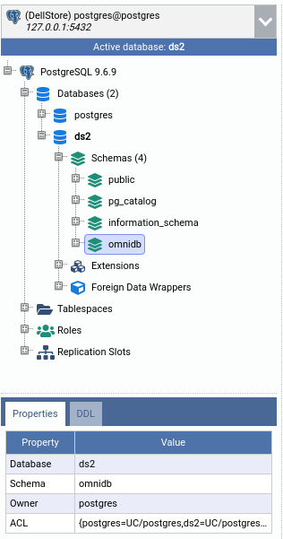
Writing functions
In the public schema, right-click the Functions node and click on Create
Function. It will open a SQL Query inner tab, already containing a SQL
Template to help you create your first PL/pgSQL function.
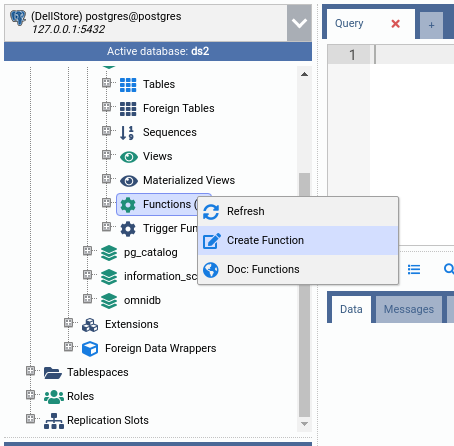
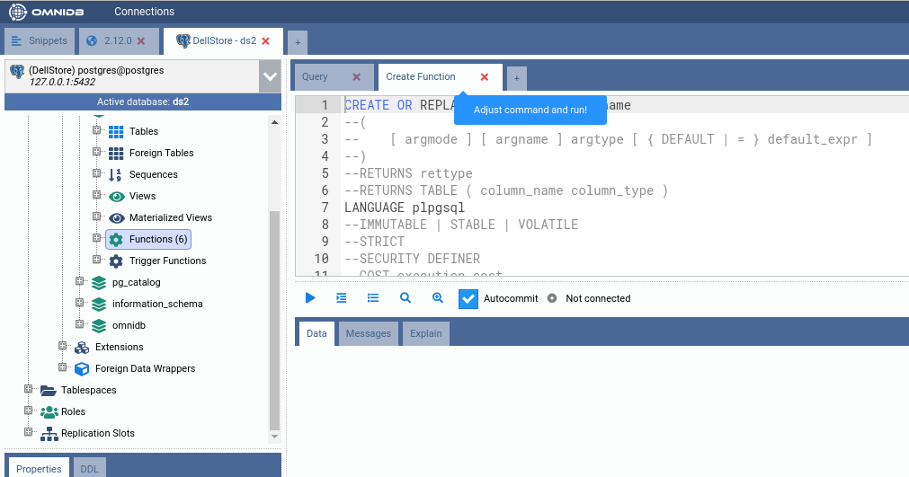
You can refer to PostgreSQL documentation on how to write user-defined functions. No need to open a new browser tab: just right-click the Functions node and click on Doc: Functions to view the documentation inside OmniDB.
For now, let us replace this SQL template entirely for the source code below:
CREATE OR REPLACE FUNCTION public.fnc_count_vowels (p_input text)
RETURNS integer LANGUAGE plpgsql AS
$function$
DECLARE
str text;
ret integer;
i integer;
len integer;
tmp text;
BEGIN
str := upper(p_input);
ret := 0;
i := 1;
len := length(p_input);
WHILE i <= len LOOP
IF substr(str, i, 1) in ('A', 'E', 'I', 'O', 'U') THEN
SELECT pg_sleep(1) INTO tmp;
ret := ret + 1;
END IF;
i := i + 1;
END LOOP;
RETURN ret;
END;
$function$
This will create a function called fnc_count_vowels inside the schema
public. This function takes a text argument called p_input and counts how
many vowels there are in this string. Then returns this count.
To create the function, execute the command in the SQL Query inner tab. If successful, the function will appear under the Functions tree node (you can refresh it by right-clicking and then clicking in Refresh). By expanding the function node as well, you can see its return type and its argument.
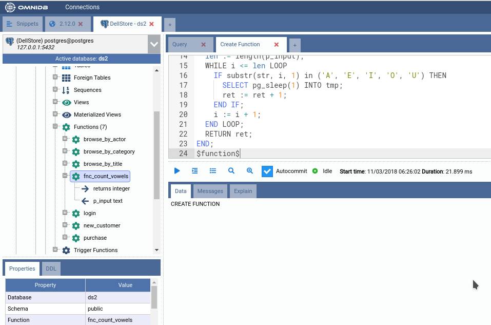
Now let us execute this new function for the first time. Open a simple SQL Query inner tab and execute the following SQL query:
SELECT public.fnc_count_vowels('The quick brown fox jumps over the lazy dog.')
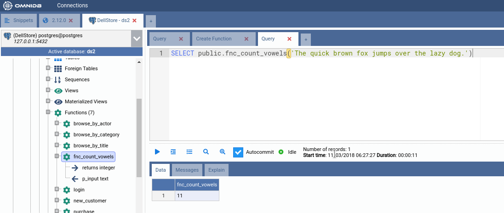
Note how the query returns a single value, containing the number of vowels in
the text. Note also how the query took several seconds to finish; this is caused
by the pg_sleep we put in the source code of the function fnc_count_vowels.
By right-clicking the function node, you can see there are actions to edit, select and drop it. As you probably guessed, each action will open SQL Query inner tabs with handy SQL templates in them. But the most interesting action right now is Debug Function. Go ahead and click it!
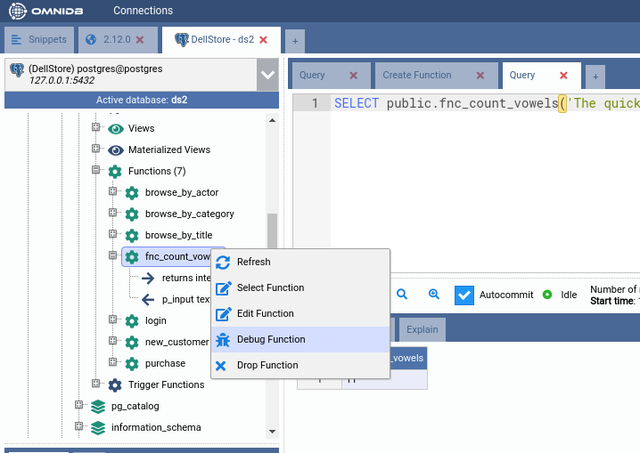
Debugging functions
The debugger is a specific inner tab composed of a SQL editor that will show the process step by step on top of the function source code, and 5 tabs to manage and view different parts of the debugger.
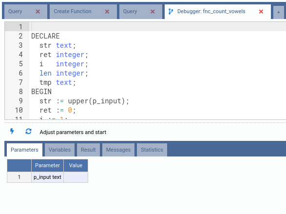
- Parameters: Before the debugging process starts, the user must provide all the parameters in this tab. Parameters must be provided exactly the same way you would provide them if you were executing the function in plain SQL, quoting strings for instance;
- Variables: This grid displays the current value of each variable that exists in the current execution context, it will be updated with every step;
- Result: When the function ends, this tab will show the result of the function call. It could be empty, a single value or even a set of rows;
- Messages: Messages returned explicitly by
RAISEcommands or even automatic messages from PostgreSQL will be presented in this tab; - Statistics: At the end of the debugging process, a chart depicting execution times for each line in the function body will be presented in this tab. Additionally, the SQL editor will be updated with a set of colors representing a heat map, from blue to red, according to the max duration of each line.
Now let us start debugging this function. First thing to do is to fill every parameter in the Parameters tab:
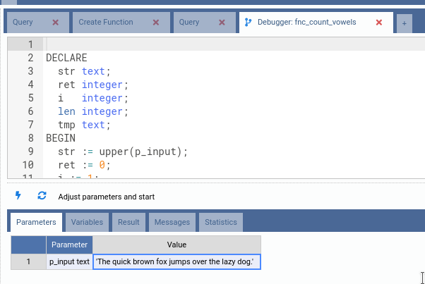
Then click on the Start button. Note how OmniDB automatically goes to the
Variables tab, which is the interesting tab now that the function is being
debugged. The argument p_input is now called $1, indicating the first
argument of the function. Also note the variable found, which is a PostgreSQL
reserved variable that indicates whether or not a query has returned values
inside of the function.
Also note that OmniDB points to the first line of the source code of the function, highlighting it in green. This is the line that is about to be executed.
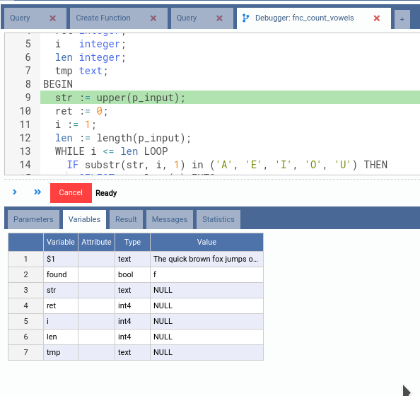
Now click in the first button below the SQL editor. It is the Step Over button, and it means that OmniDB will execute the next statement and stop right after it.
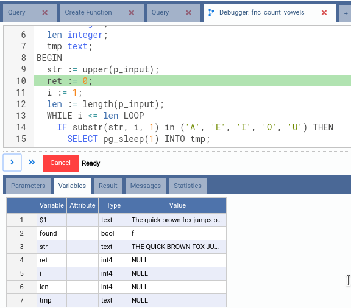
Note how the variable str has the value assigned to it during execution of
line 9. Right now OmniDB is about to execute line 10, showing the current
execution state.
Now that you know how to step over, let us speed up things a little bit. Click on the header of the line 20, the last line of code. By doing this, you just placed a breakpoint. The debugger interface allows you to place one breakpoint at a time.
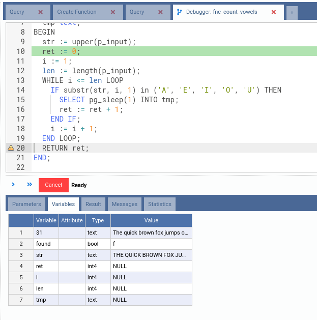
After setting a breakpoint, you can click in the second button, Resume. OmniDB
will carry on with the debugging process until it reaches the line of code with
the breakpoint. This may take a while because of the pg_sleep commands we put
in the source code. Note that if you click this button without previously
setting a breakpoint, OmniDB will execute the entire function to the end.
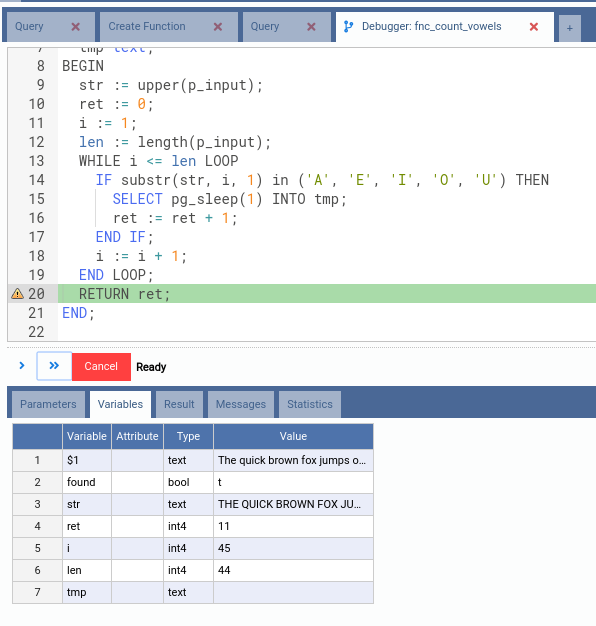
Observe the values for each variable. We can see that the value of ret is 11
even before the function finishes. Also note that OmniDB does not remove the
breakpoint you placed. To do that, you can click in the breakpoint little icon.
Now hit Resume again. Let us see now what happens when the function finishes.
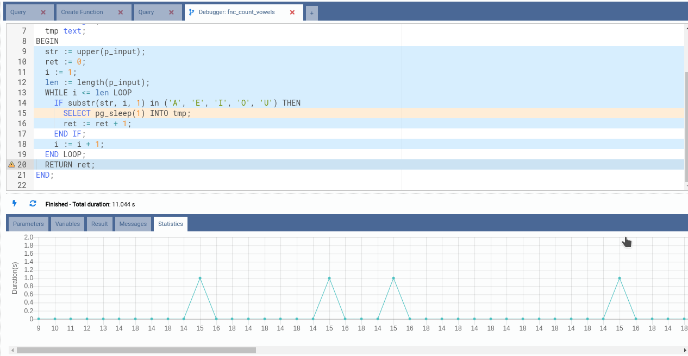
OmniDB will go automatically to the Statistics tab, which shows 2 interesting features:
- Sum of Duration per Line of Code Chart: in the bottom, a chart represents
total duration of the function distributed in the lines of code. With this
chart, you can easily spot bottlenecks in your code. In our example, it was line
15, which we deliberately put a
pg_sleep(1)call; - Colored lines of source code: OmniDB colors the lines accordingly to the numbers seen in the chart. Colors vary from blue (small duration), passing through yellow (medium duration) until red (high duration), as in a temperature diagram.
Also note the Total duration message, which shows execution time of the function, without considering the time you spent analyzing it.
Inspecting record attribute values
An interesting feature that we do not usually see in other debuggers is the
ability to inspect each attribute of a variable of type record. OmniDB
debugger does that as it is split into different variables, allowing you to see
the value and type of each attribute.
To illustrate that, let us create another function, similar to the previous one,
but now called fnc_count_vowels2:
CREATE OR REPLACE FUNCTION public.fnc_count_vowels2 (p_input text)
RETURNS integer LANGUAGE plpgsql AS
$function$
DECLARE
str text;
i integer;
len integer;
rec record;
BEGIN
str := upper(p_input);
i := 1;
len := length(p_input);
SELECT 0 AS a, 0 AS e, 0 AS i, 0 AS o, 0 AS u INTO rec;
WHILE i <= len LOOP
CASE substr(str, i, 1)
WHEN 'A' then rec.a := rec.a + 1;
WHEN 'E' then rec.e := rec.e + 1;
WHEN 'I' then rec.i := rec.i + 1;
WHEN 'O' then rec.o := rec.o + 1;
WHEN 'U' then rec.u := rec.u + 1;
ELSE NULL;
END CASE;
i := i + 1;
END LOOP;
RETURN rec.a + rec.e + rec.i + rec.o + rec.u;
END;
$function$
Observe how we keep track of every vowel count individually. Now let us start
debugging it, using the same text as before ('The quick brown fox jumps over
the lazy dog.'):
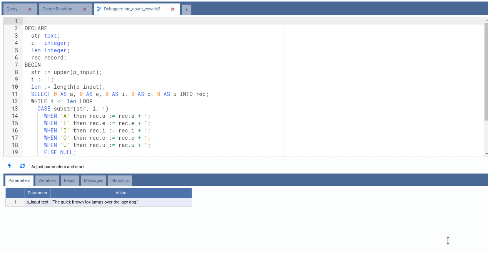
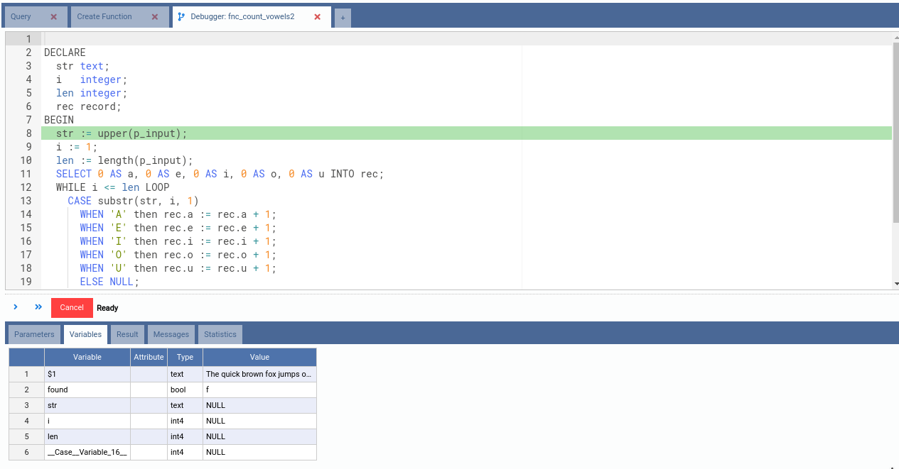
Note from the picture above that PostgreSQL created an internal Case Variable.
Also note that the variable rec is not shown in the list of known variables.
This is because PostgreSQL still does not know what attributes rec will
contain. Let's step over some more steps.
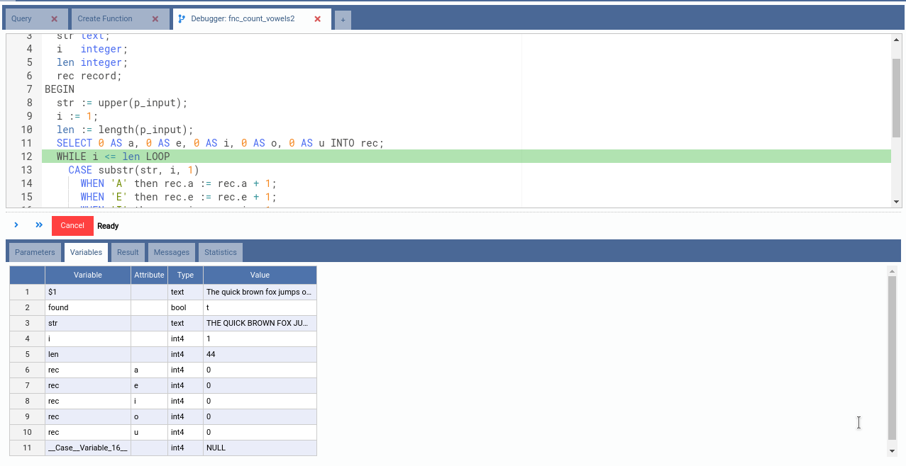
Right after the execution of line 11, rec variable comes to life and we can
see it has 5 attributes: a, e, i, o and u, all of the type int and
having initial value 0.
Now set a breakpoint in line 23 and click the Resume button.
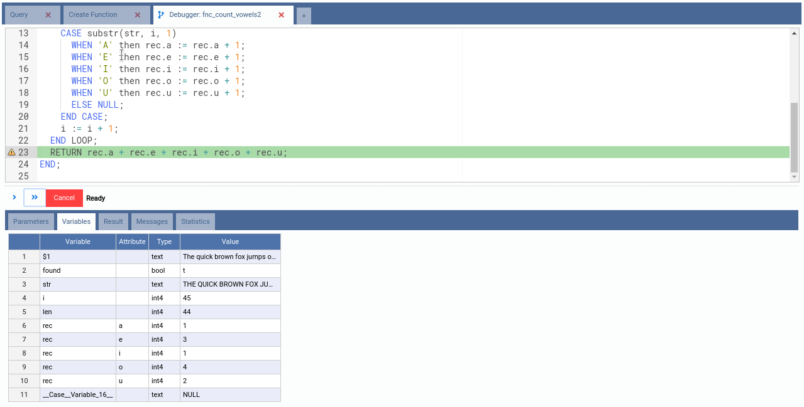
See how we can inspect every attribute, observing how many of each vowel the text contain. Now let's finish this function.
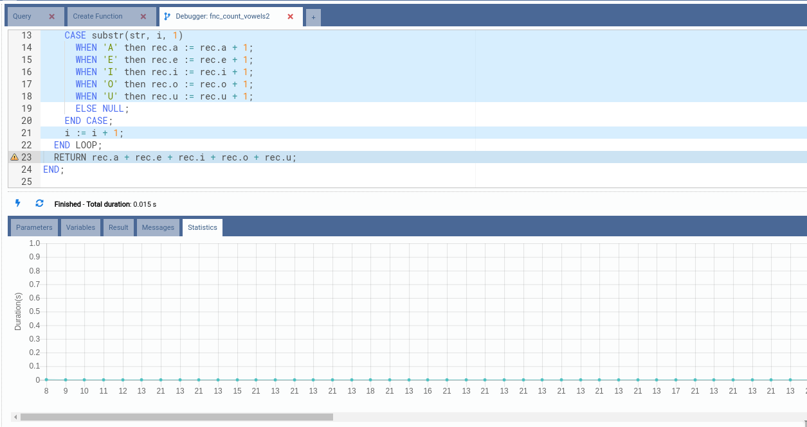